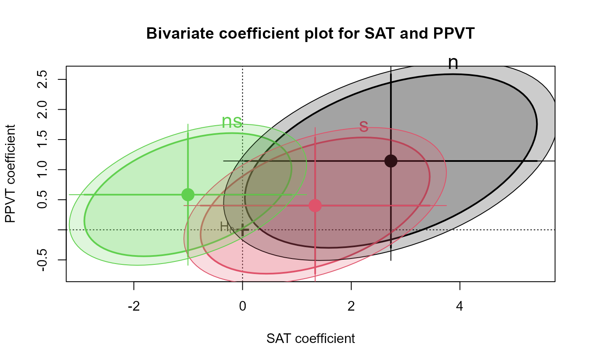

Displays confidence ellipses for all parameters in an multivariate linear
model, for a given pair of variables. As such, it is a generalization of
confidenceEllipse.
Usage
coefplot(object, ...)
# S3 method for mlm
coefplot(
object,
variables = 1:2,
parm = NULL,
df = NULL,
level = 0.95,
intercept = FALSE,
Scheffe = FALSE,
bars = TRUE,
fill = FALSE,
fill.alpha = 0.2,
labels = !add,
label.pos = NULL,
xlab,
ylab,
xlim = NULL,
ylim = NULL,
axes = TRUE,
main = "",
add = FALSE,
lwd = 1,
lty = 1,
pch = 19,
col = palette(),
cex = 2,
cex.label = 1.5,
lty.zero = 3,
col.zero = 1,
pch.zero = "+",
verbose = FALSE,
...
)Arguments
- object
A multivariate linear model, such as fit by
lm(cbind(y1, y2, ...) ~ ...)- ...
Other parameters passed to methods
- variables
Response variables to plot, given as their indices or names
- parm
Parameters to plot, given as their indices or names
- df
Degrees of freedom for hypothesis tests
- level
Confidence level for the confidence ellipses
- intercept
logical. Include the intercept?
- Scheffe
If
TRUE, confidence intervals for all parameters have Scheffe coverage, otherwise, individual coverage.- bars
Draw univariate confidence intervals for each of the variables?
- fill
a logical value or vector.
TRUEmeans the confidence ellipses will be filled.- fill.alpha
Opacity of the confidence ellipses
- labels
Labels for the confidence ellipses
- label.pos
Positions of the labels for each ellipse. See
label.ellipse- xlab, ylab
x, y axis labels
- xlim, ylim
Axis limits
- axes
Draw axes?
- main
Plot title
- add
logical. Add to an existing plot?
- lwd
Line widths
- lty
Line types
- pch
Point symbols for the parameter estimates
- col
Colors for the confidence ellipses, points, lines
- cex
Character size for points showing parameter estimates
- cex.label
Character size for ellipse labels
- lty.zero, col.zero, pch.zero
Line type, color and point symbol for horizontal and vertical lines at 0, 0.
- verbose
logical. Print parameter estimates and variance-covariance for each parameter?
Examples
rohwer.mlm <- lm(cbind(SAT,PPVT,Raven)~n+s+ns, data=Rohwer)
coefplot(rohwer.mlm, lwd=2,
main="Bivariate coefficient plot for SAT and PPVT", fill=TRUE)
coefplot(rohwer.mlm, add=TRUE, Scheffe=TRUE, fill=TRUE)

coefplot(rohwer.mlm, var=c(1,3))
 mod1 <- lm(cbind(SAT,PPVT,Raven)~n+s+ns+na+ss, data=Rohwer)
coefplot(mod1, lwd=2, fill=TRUE, parm=(1:5),
main="Bivariate 68% coefficient plot for SAT and PPVT", level=0.68)
mod1 <- lm(cbind(SAT,PPVT,Raven)~n+s+ns+na+ss, data=Rohwer)
coefplot(mod1, lwd=2, fill=TRUE, parm=(1:5),
main="Bivariate 68% coefficient plot for SAT and PPVT", level=0.68)